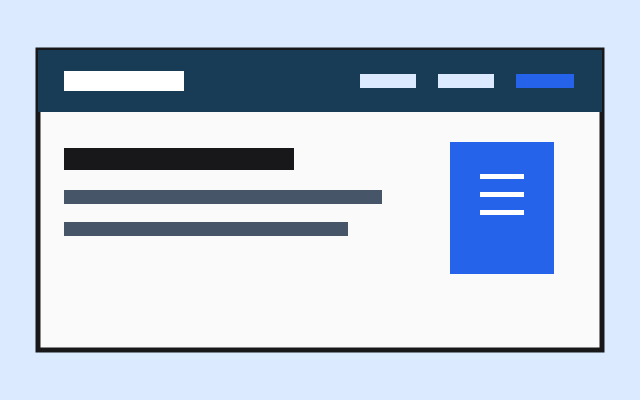
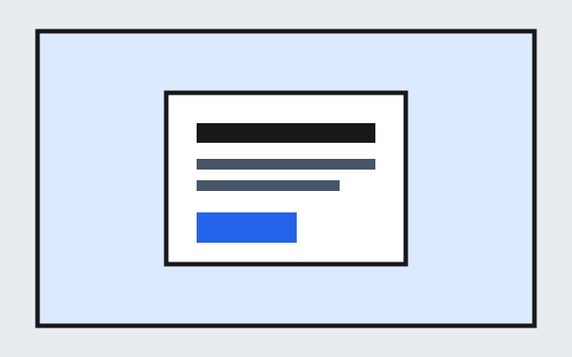
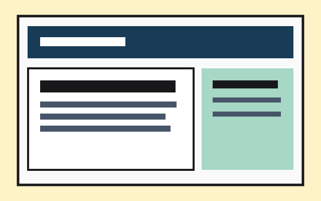

CSS GRID
Trang báo điện tử
Bố cục tin tức nhiều vùng với lưới lồng nhau và các điểm ngắt responsive.
Xem bài thực hànhPORTFOLIO · FRONT-END
Mình là Minh Anh, một người học phát triển web. Mình thích biến những ý tưởng nhỏ thành giao diện có cấu trúc, dễ đọc và hoạt động tốt trên nhiều thiết bị.
Xem dự án
CHỌN LỌC
Một vài bài thực hành về cấu trúc, bố cục và thiết kế đáp ứng.
CSS GRID
Bố cục tin tức nhiều vùng với lưới lồng nhau và các điểm ngắt responsive.
Xem bài thực hành

HTML & CSS
Thẻ sản phẩm nhất quán với bố cục linh hoạt và trạng thái tương tác.
Xem bài thực hành
RESPONSIVE NAV
Menu CSS chuyển từ các liên kết ngang sang điều khiển hamburger trên màn hình nhỏ.
Xem bài thực hành
FLEXBOX
Thực hành căn giữa một thành phần theo cả hai chiều trong khung nhìn.
Xem bài thực hành
CSS GRID
Header, nội dung chính, sidebar và footer được sắp xếp trong một lưới hai cột.
Xem bài thực hànhCÙNG TRAO ĐỔI